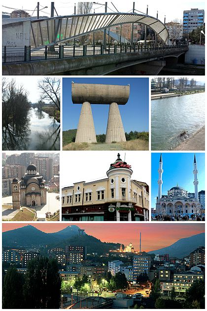
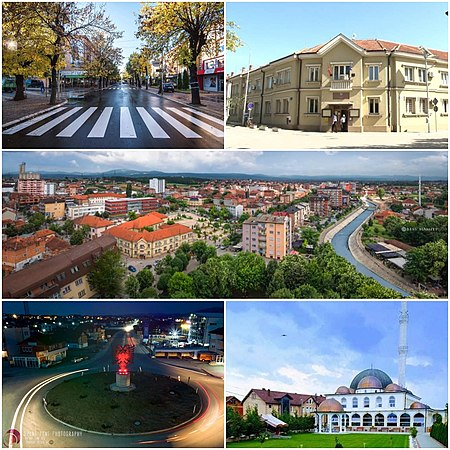
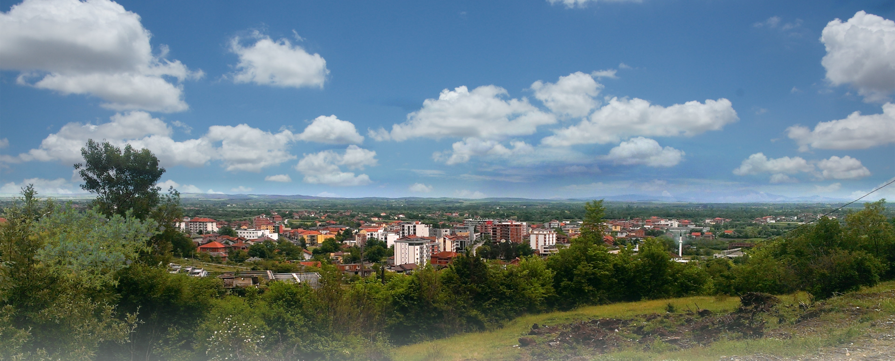
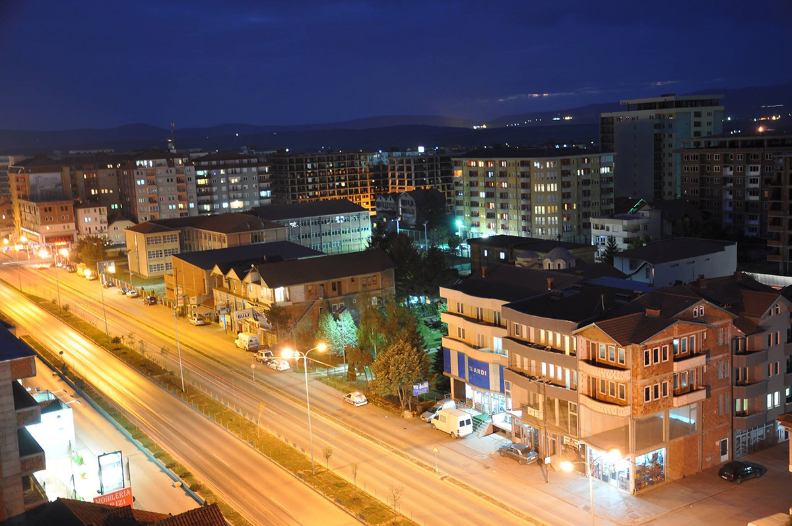
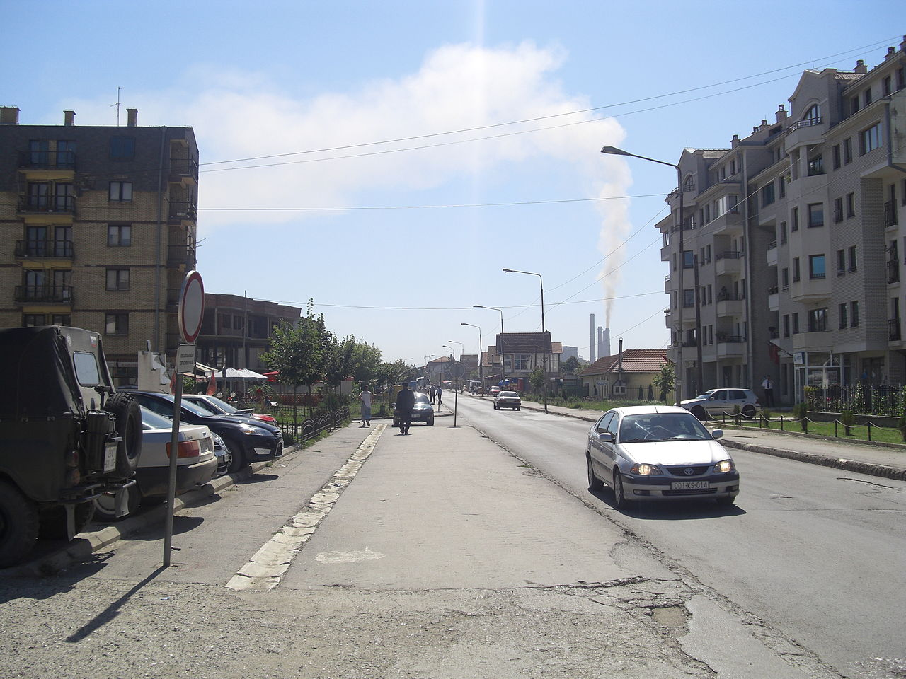
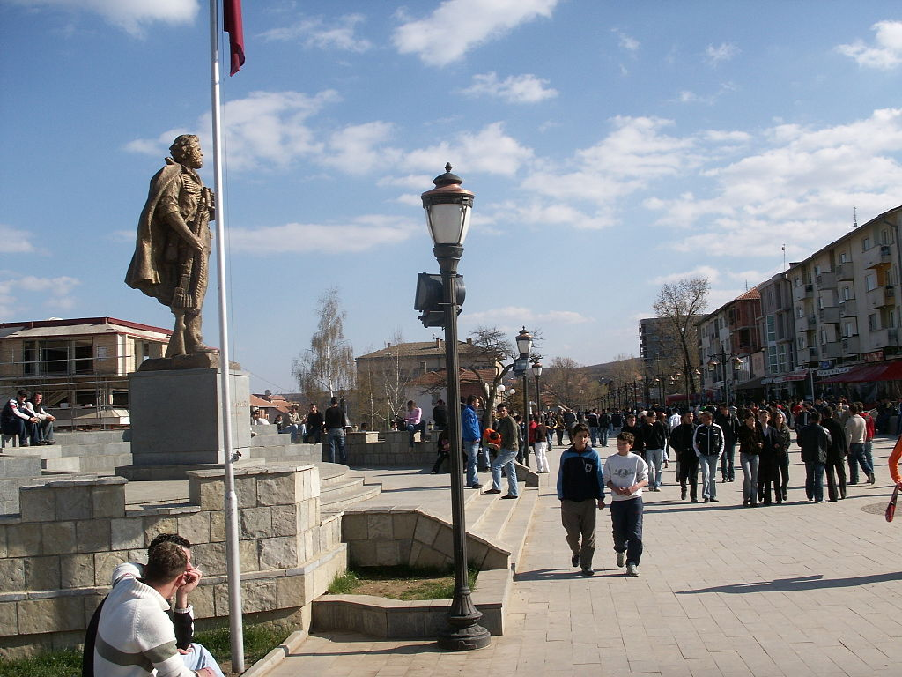

-OTHERS-
General About Mitrovica ^

-
Mitrovica (definite Albanian form: Mitrovicë) or Kosovska Mitrovica is a city and municipality located in Kosovo.
Settled on the banks of Ibar and Sitnica rivers, the city is the administrative center of the District of Mitrovica.
There is archaeological evidence that proves the region of Mitrovica has been inhabited since the Neolithic era.
Two settlements were discovered in 1955 in the industrial park near the FAFOS factory (phosphates productions),
from which the archaeological site got the name. In Fafos, settlements revealed different objects of everyday use
but the most characteristic were cult objects (small anthropomorphic figures) of the Vinča culture.
Mitrovica is characterized with a large ethnic diversity, dominated by Albanians and followed by Serbs, Bosniaks,
Turks, Roma and other ethnic groups.
In south municipality of Mitrovica, Albanians make 96.65% of the total population, while other ethnic groups are Roma,
Turks, Bosniaks and others. According to 2011 census, only 14 Serbs live in south Mitrovica municipality.
The Trepça Mines are located in Mitrovica, though they are not operating. With the closure of the complex,
the influx of refugees and IDPs and the lack of investment, unemployment (estimated at approximately 77%)
has been prevalent among all communities in the Mitrovica municipality.
- Sights: The strategic position of the region of Mitrovica in the middle of two great rivers Ibar and Sitnica and its mineral wealth in Albanik (Monte Argentarum), made this location populated since prehistoric period.
- Sports: Mitrovica is the City in Kosovo with the most professional Football clubs, in the Country. Three football clubs are situated on the territory of Mitrovica.

-
Podujevo, Podujeva, or Besiana (definite Albanian form: Podujevë or Besianë), is a town and municipality in Kosovo's
Pristina District. According to the 2011 census, the city has 23,453 inhabitants. The total population of the municipality is estimated at 83,242
(in 2016).
The region includes many Medieval Serbian monuments. In 1355, Emperor Stefan Dušan gave the village of Braina to Mount Athos. In 1381,
Prince Lazar gave Orlane (a village in Podujevo) to his endowment, the Ravanica monastery. Ruins of old Serbian monasteries and churches exist at Orlane,
Murgula (destroyed in the 15th century), Palatna, Slatina, Svetlje, Rakinica, Metohija, Donje Ljupce (destroyed in the 15th century),
Gornja Pakastica (destroyed in the 15th century), Brevnik, Braina and graveyards exist in most of these villages. The village of Brevnik had a notable medieval mine, and a fort with a church.
In 1997 the Kosovo Liberation Army was formed so Milosevic started a brutal campaign against it in 1998.
For such reason NATO started Military campaign so it could protect the civilian population from Milosevic.
In March 1999 the scorpions killed 14 Albanian civilians.
After the war, the process of establishing Municipal Assembly began in 2002.
Later in 17 of February 2008 Kosovo declared its independence.
During the Kosovo War (1998-1999), the town was the site of the Podujevo massacre, on March 28,
in which 14 Kosovo Albanian women and children were executed by Serbian paramilitary forces.
While the urban population is estimated to consist of 23.453 citizens, the rural population lives in 77 villages with a total number of 65.046
residents. From the overall population, Albanians are 87.523, Ashkali 680, Roma 75, Bosniaks 33, Serbs 12, Turks 5, Egyptians 2 and the other 43 and
not specified. The city faces a low ratio of internal migration but a high rate of commuting.
98% of the residents are Muslim. The illiteracy ratio is lower than 5%.
The biggest expansion on the economy of Podujevo occurred during the 1980s.
At that time, there were 16 social organizations that have developed their economic activities, with altogether 2.500 employees.
the beginning of the 1990s is characterized with a growing of private businesses, in particular in trade and services.
During the war of 1999 all of these businesses were destroyed by Serbian military forces, so the period of renewal was long and difficult.
Podujevo's residents have shown a high interest to contribute for culture, although they did not have the proper conditions to participate.
In fact, the requirements for fulfillment of various cultural and art projects are higher in comparison with the conditions offered by the
Management of Culture, Youth and Sport.
The lack of space and adequate infrastructure have impacted the developing of cultural live in general.
In Podujevo city are located a certain number of different organizations and artistic associations which are concentrated particularly in drama,
comedy, sportive competitions and other cultural activities.
These activities are organized in the City Theater, Sport Hall with only 800 seats, City Stadium, and City Library, even though with an insufficient area.

-
Istok or Istog (definite Albanian form: Istog, Istogu,) or Burim is a town and municipality located in the District of Peja of western Kosovo.
The Ottoman defter (tax registry; census) of 1582 registered the Ipek nahiyah as having 235 villages, of which Suho Grlo (Suvo Grlo)
was located within modern Istok municipality. Suvo Grlo had three bigger mahala (neighbourhoods). One of the neighbourhoods included Muslim converts.
There were several Orthodox priests in the village.
The municipality of Istok has an ethnic Kosovo Albanian majority. Most of the Kosovo Serbs live in the village of Osojane.
Osojane is to the east of the town of Istok; also part of the Serbs lives in northern part of the municipality.
After World War II, watermills on the river of Istok were nationalized and a new fish plant was built to operate as a socially owned enterprise.
The company's name under Yugoslavia was "Ribnjak", meaning "piscatory" or "fishery" in Serbian. It was later privatized as Motel "Trofta",
meaning "trout" in Albanian - the type of fish it has and is still producing, selling, and distributing. The company employs around 70 people.
Podujevo's residents have shown a high interest to contribute for culture, although they did not have the proper conditions to participate.
In fact, the requirements for fulfillment of various cultural and art projects are higher in comparison with the conditions offered by the
Management of Culture, Youth and Sport.
The lack of space and adequate infrastructure have impacted the developing of cultural live in general.
In Podujevo city are located a certain number of different organizations and artistic associations which are concentrated particularly in drama,
comedy, sportive competitions and other cultural activities.
These activities are organized in the City Theater, Sport Hall with only 800 seats, City Stadium, and City Library, even though with an insufficient area.
General About Kosovo Polje ^

-
Fushë Kosova (definite Albanian form: Fushë Kosovë), or Kosovo Polje, is a town and municipality located in the District of Prishtina in central Kosovo.
According to the 2011 census, the town of Fushë Kosova has 12,919 inhabitants, while the municipality has 33,977 inhabitants,
a number continuously on the rise.
Fushë Kosova was named after the Kosovo Field of the 1389 Battle of Kosovo.
The settlement of Fushë Kosova was established in 1921 during the Kingdom of Yugoslavia (see Colonisation of Kosovo).
Prior to the 1999 Kosovo War, the town of Fushë Kosova had,
according to the figures of the Federal Statistical Office in Belgrade from March 1991,
a total population of 35,570 inhabitants, while the ethnic makeup was 56.6% Albanian, 23.7% Serb and 19.6% from other communities.
According to the last official census done in 2011, the municipality of Kosovo Polje has 34,827 inhabitants.
Based on the population estimates from the Kosovo Agency of Statistics in 2016, the municipality has 37,591 inhabitants.
There are two magnesium mines operating on the territory of Kosovo Polje: Goleš and Strezovce.

-
Obilić, or Obiliq or Kastriot (definite Albanian form: Obiliqi or Kastrioti),
is a town and municipality located in the Pristina District of Kosovo, Serbia.
According to the 2011 census, the town of Obilić has 6,864 inhabitants, while the municipality has 21,549 inhabitants.
The municipality includes the town of Obilić and 19 villages.
The municipality is located immediately north-west of Pristina on the main road to Mitrovica. It was created in 1989,
prior to which it formed part of Pristina municipality.
According to the 2011 census, the municipality had a population of 21,548 inhabitants.
Based on the population estimates from the Kosovo Agency of Statistics in 2016, the municipality has 19,440 inhabitants.
There are three coal mines operating on the territory of Obilić: Belaćevac, Miraš and Sibovc.
These mines are of tremendous value for Kosovo's economy and energy sector, as more than 97% of Kosovo's annual electricity
production comes from there, with coal being the main resource for the power plants.
General About Skenderaj ^

-
Skenderaj (definite Albanian form: Skënderaj or Skënderaji) or Srbica (is a town and municipality located in the Mitrovica District of Kosovo.
According to the 2011 census, the town of Skënderaj has 9,372 inhabitants, while the municipality has 50,858 inhabitants.
It is the largest city in the Drenica geographical region of Kosovo.
It is mainly populated by ethnic Albanians. It is claimed to be the poorest city in Kosovo.
It is the place where the Kosovo War began in 1998, and to which the most damage was done.
The settlement is by the Klina river, in the Klina field (Klinsko polje).
It is the main settlement of the Drenica region.[3] The Klina river belongs to the Metohija region,
while the settlement morphologically and hydrologically gravitates towards the Kosovo region.
The municipality covers an area of 378 km2, including the town of Skenderaj and 51 villages.
Skënderaj has historically been the poorest municipality in Kosovo
with little investment having been made since the time of the former Yugoslavia.
It suffers from low economic activity and continuous high unemployment.
Agriculture is the major local industry but the municipality has not fully developed existing arable land.
Today, the local economy consists of small enterprises such as family-run shops and restaurants while two privatized factories,
a brick and a flour mill, employ a few hundred people. The other major sector of employment is the municipality's civil service.
^